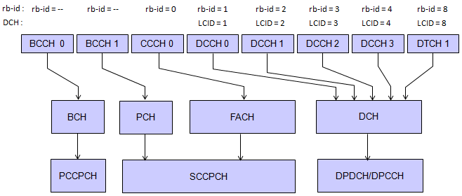
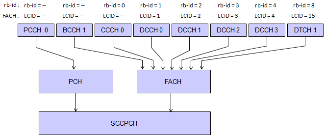
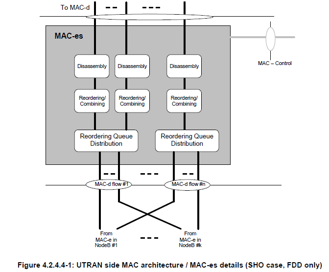
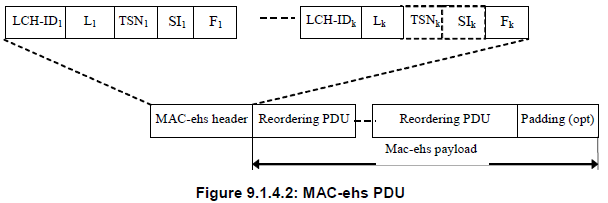
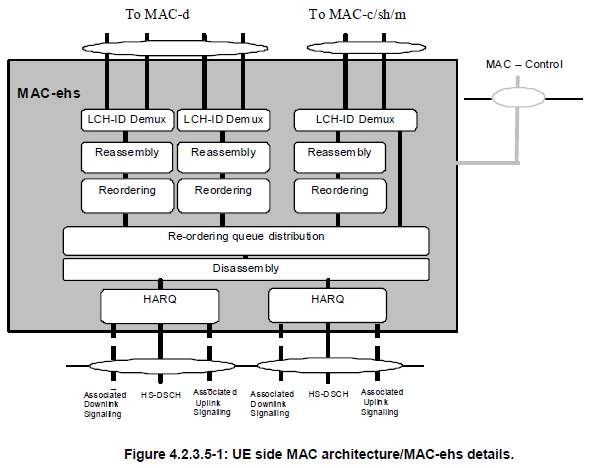

|
From R99 to LTE Home : www.sharetechnote.com |
||||||||||||||||||||||||||||||||||||||||||||||||||||||||||||||||||||||||||||||||||||||||||||||||||||||||||||||||||||||||||||||||||||||||||||||||||||||||||||||||||||||||||||||||||||||||||||||||||||||||||||||||||||||||||||||||||||||||||||||||||||||||||||||||||||||||||||||||||||||||
|
I have been working on creating various test cases on UMTS sides for a couple of years. During this period, I saw technologies changing from R99 to HSDPA, HSUPA and now to LTE. But in terms of RRC and above layers which I have been mostly working on, I haven't seen much differences. Sometimes I got the impressions that the higher layer signaling (RRC and above) gets even more simpler as the technology changes from old technology to a next technologies. If you look at the higher layer technologies of LTE, you will feel that LTE signaling looks simpler than other other existing technologies.
Following is the brief PHY channel structure for R99 (WCDMA) network. As the technolgy evolve, you will see a couple of new Physical Channel is added and the new channel usually has shorter TTI.
Then, How we could have higher data rate and less latencies and more effective usange of radio channels with simpler signaling ? The secrete is that as the technologies evolves, the higher layer signaling stays similar or even simpler, the lower layer (PHY and MAC) gets complicated and these lower layers are the one that enable us to enjoy all those evolved features especially high data rate and low latencies. So to understand the details of the evolved technologies, we have to understand the details of low layer - e.g, PHY and MAC.
Here is a list of questions you have to have when you want to study a new technology. i) What kind of additional PHY channes has been added comparing to R99 ? ii) What kind of information is carried by the additional physical channels ? iii) What kind of MAC identieis are added comparing to R99 ? iv) What is the role of the new MAC identities especially in terms of scheduling ?
Before I start talking about the questions listed above, let's think about why we wanted a new technology called HSDPA ? In any communication technolgy, the biggest motivation for a new technology was to increase the data rate. Then a question arises. How can we increase the data rate ? Regardless of communication types, we usually has taken similar method for this, which is as follows :
i) Change modulation scheme ii) Decrease the latency between communicating party iii) Optimization at multi user level rather than optimization at single user level
Let's take some examples. The evolution path of bluetooth was from the standard rate to 2 Mb EDR (Enhanced Data Rate) to 3 Mb EDR and the biggest changes for each step was the change of modulation scheme. What happened in GSM evolutionary path, GSM to GPRS to EGPRS(EDGE) to EDGE Evolution ? The biggest changes in this path is modulation scheme changes as well. From R99 to HSDPA, we also introduced a new modulation scheme called 16 QAM. The advantage of using new modulation scheme to increase the data rate is the simplicity of the concept, but a disadvantage would be that it requires hardware changes.
Next step would be to decrease the latency between communicating party. How can we achieve this ? Increasing physical data propagation speed between two communicating parties ? It is almost impossible because the propagation speed is already at the speed of light. Then what is another option ? It is improving scheduling algorithm of the communication. What is it ? It is a little bit hard to explain in simple way so I will talk on this in a separate section.
Lastly let's think about the optimization at multi user level rather than optimization at single user level. Let's suppose a situation where 10 user is communicating to one Node B. In R99, each user has a separate and independant communication path to the node B via a special channel called DPCH (Dedicated Physical Channel). The optimization in this case means ten separate optimization process for each user. OK.. now let's think each of the users is getting the max data rate for the specific UE at the specific environment to which the UE is exposed. Does this guarantee that the whole resource of the Node B was fully utilized ? It is hard to say "Yes" to this question. Isn't there any possibility that some of the resources was being wasted ? It would be hard to say "No" to this question. We will think about this issue in next section.
Introduction of new Channels in HSDPA
Following is physical channel make-up for HSDPA network.
In HSDPA, three four new physical channels were introduced
i) HS-DSCH ii) HS-SCCH iii) HS-DPCCH iv) F-DPCH
With introduction of these four channels, we could implement many of the methods to improve the data rate which has been briefly descrived in previous section.
The most important channel is definately HS-DSCH (High Speed Downlink Shared Channel). As the name implies, it is a SHARED channel whereas in R99 we used a DEDICATED channel. It means all the users within a cell is sharing a single channel which is a big pipes rather than each of the users has it's own dedicated channel which is a small pipes. With this the network can optimize the resource allocation among the multi users more efficiently. For example as an extreme case the network allocate 91% of resources to a single UE and only 1% of resources to each of the remaining 9 users when the nine user does not require much resource or those 9 users are in such a poor environment where it can utilize only small fraction of the transmission capacity. In case of using dedicated channel, we cannot do this kind of extreme resource allocation because each of the dedicated channels requires a certain level of minum resource allocation even when the real utilization is lower than the minimum resource allocation.
I said HS-DSCH is a shared channel. It means that the whole data in the channel is recieved by all users. Then how can a UE figure out whether the data is for that UE or for some other UEs. I also said in HSDPA multiple modulation scheme is used, QAM and 16 QAM. Then how can a UE knows whether the data is QAM modulated or 16 QAM modulated ? To carry all these information, another new channel was introduced and it is HS-CCCH (High Speed Common Control Channel). The information carried by HS-CCCH is as follows : i) Transport format information - code tree for the data, modulation scheme, transport blocksize ii) Hybrid-ARQ related information
I said at the beginning, HSDPA uses a shared channel and try to achieve the optimum resource allocation at multi user level. To do this, the network should know the exact status of the UE. And the network should know whether the data it sent successfully reached it's destination (a specific UE). To enable this, UE reports its communication quality and the data reception status to the network repeatedly. For UE to send this information to network, it uses a special channel called HS-DPCCH. This channel carries CQI (Communication Quality Indicator) and Ack/Nak info.
So far so good. It seems there is only advantages of introducing these new channels, but there is nothing that gains 100% without losing anything. There is a drawback of relying on these shared channel method. It is about power control issue. You know that one of the critical requirement of WCDMA technology is a very sophisticated power control. If UE power is too low, Node B would have difficulties decoding it and if the power is too strong it can act as a noise to other UEs communicating with the Node B. For this purpose, Node B sends a UE a power control message periodically and this message should be different for all the UE because each UE may be in a different channel condition, meaning this power control message should be a "Dedicated" message. But as I explained HS-DSCH is a shared channel. Then how can Node B deliver the power control message for each specific UE. The solution was to use R99 dedicated channel (DPCH) carrying only the power control message. But using a full DPCH only for carrying a small power control message is waste of resource. To improve this situation, from Release 6 a new channel was introduced and it is F-DPCH (Fractional DPCH). The details of F-DPCH is out of the scope of this section and I wouldn't explain any further on this channel.
The whole purpose of improving scheduling is to decrease the latency between the communicating parties. In this case, the communicating parties are a UE and a Network. The basic idea of this improvement is to refine the granularity of the scheduling period.
In WCDMA network, this scheduling happens for every TTI (Transmission Time Interval) and in R99 the common TTI is 10 ms (sometimes 20ms, 40ms TTI is taken). In HSDPA, this TTI has been changed to 2 ms. Why it is 2 ms ? What can't it be 1 ms or 4 ms ? It is just a result of trade-off of various factors. If the TTI is longer like 4ms or 6 ms, the effect of the schedule time refinement would not be outstanding. However if the TTI is too short, the ratio of scheduling overhead and the refinement would decrease because executing the scheduling algorithm requires a certain amount of time and resources.
Another means of decreasing latency came from the way to handle the data with errors. In R99, those error can only be detected by RLC by Ack/Nak from the other party and whether it would request retransmission or not is determined by even higher layer. But in HSDPA, this error is detected at Physical layer. When a UE recieves data, it checks CRC and sends Ack or Nack on HS-DPCCH being transmitted 5 ms after it received the data. If UE sends Nack, Network retransmit the data. This error detection and retransmition mechanism is called H-ARQ(Hybrid ARQ).
Another mechansim for the improved scheduling adopted in HSDPA is to allocate the optimized resources for each UE. How can this be achieved ? To do this, the network should need some information to make a best decision for each UE. The important informations for this decision making is
i) CQI ii) Buffer Status iii) Priority of the data
CQI is calculated by the UE based on the signal-to-noise ratio of the recieved common pilot. If you look into details of TFRI determination by MAC layer, you will notice CQI is the only parameter to determin the TFRI. (What is TFRI ? I will talk this later in this article or some other place. This is very important to implement a test case for maximum throughput testing).
Buffer Status shows how much data is stored in the buffer for each UE. If there is no data in the buffer, the node B should not allocate any resources for the UE. So checking the buffer status is also important for optimum resource allocation.
The overall scheduling algoritm is to allocate more resource to UE which report higher CQI, but there are some cases where the Node B should allocate a certain amount of resources for a specific UE even when it reports a poor CQI. The common example for this situation is a certain RRC message with tight time out value and some streaming data which has some expiration time. To handle these situation, the scheduler (Node B MAC layer, MAC-hs) assign a priority to each data blocks and put those blocks into separate priority Queues.
What I explained so far is just brief overview and to provide motivation to study further. If you are involved in test case creation or protocol stack development, this level of understanding would not help much. If you want to study further so that it may give you practical help for test case development or protocol stack optimization, I recommend you to study very details of MAC-hs and TFRI selection mechanism.
In previous section, we talked on why we needed HSDPA and how the HSDPA imroved the data throughput. But HSDPA improved only Downlink throughput and did nothing about Uplink. So the natural tendency of next evolution would be improvement on Uplink side. This is how we came out with another technology called HSUPA.
The overall mechanism by which HSUPA improved the uplink throughput is similar to the one used in HSDPA. So if you became familiar with HSDPA mechanism you would not have difficulties understanding HSUPA mechanism.
Introduction of new Channels in HSUPA
As in HSDPA, several new channels were introduced to implement HSUPA and they are as follows : i) E-DPDCH ii) E-DPCCH iii) E-HICH iv) E-RGCH v) E-AGCH
Briefly speaking, E-DPDCH is equivalent version of HS-DPSCH and E-DPCCH is equivalent to HS-SCCH and E-HICH is equivalent to HS-DPCCH. But there is a main difference between these HSUPA channels and HSDPA channel. E-DPDCH and E-DPCCH are dedicated channels whereas HS-DPSCH and HS-SCCH are shared channel, but this is understandable because in HSDPA case the source and target of the data transmission is one-to-many but in HSUPA case the source and target is one-to-one, so it is understandable to use dedicated channels in HSUPA.
There are another big difference between HSDPA and HSUPA. It is about scheduling issue. Regardless of whether it is HSDPA or HSUPA, the scheduler (the decision maker) is on Node B, not on a UE. For scheduling we need two very important information, the channel quality and buffer status information. In HSDPA, the information that the decision maker (the scheduler) needs to get from the target of the transmission is only channel quality information and this information was provided via HS-DPCCH and the buffer status information is already available to the scheduler because the transmission buffer is located in the same place (node B) as the scheduler. So in HSDPA the transmitter (node B) can send the data anytime the situation is allowed, but in HSUPA case the transmitter (UE) cannot send the data anytime it wants to send. Before the UE send the data, it has to check whether the target (the reciever, Node B) is ready and has enough resource to recieve the data. For UE to check the status of the reciever (node B) and get the approval from the node B, E-AGCH (Absolute Grant Channel) and E-RGCH (Relative Grant Channel) are used. Node B (the scheduler) send the scheduling grants to UE on when and at what data rate the UE can transmit the data.
The difference between E-AGCH and E-RGCH are i) E-AGCH is a shared channel and E-RGCH is a dedicated channel ii) E-AGCH is typically used for large changes in the data rate and the E-RGCH is used for smaller adjustments.
HSUPA Scheduling is quite a complex process but the overall process in simple form are as follows : i) UE sends Grant Request to Node B ii) Node B send Abosolute Grant (AGCH) and Relative Grants(RGCH) to UE iii) UE sets the Serving Grant Value based on AGCH value and RGCH value iv) Based on the Serving Grant Value, UE sets the E-TFC value for the specific moment of the transmission.
For further details, we need to study the detailed mechanism of MAC-e.
We have seen the evolutionary path from R99 to HSDPA and HSUPA and now we have the speed improvement on both uplink and downlink side. We call the combination of HSDPA and HSUPA as HSPA. As we go forward, we got the HSPA further evolved and this evolved version of HSPA is called HSPA+. Now a question would arise, what would be the factors to get the HSPA improved in terms of speed ? Followings are the key items for HSPA+.
i) CPC - DL DRX/UL DTX, HS-SCCH less operation, Enhanced F-DPCH ii) Layer 2 Improvement iii) 64 QAM for HSDPA iv) 16 QAM for HSUPA v) Enhanced Cell_FACH
Now you may notice right away what 64 QAM and 16 QAM is for and these are mainly for the increase the size of the transmission pipe in physical layer. I would not explain on this any more. Up until HSPA, most of the efforts to increase the throughput was done at the physica layer or MAC layer, but there are bottle necks at every layer. If we remove all the bottle necks from every layer, we would get the ideal max throughput, but this kind of bottle neck removal cannot be done at single shot. From a HSPA+, a big bottleneck on layer 2 (RLC) was improved. The RLC PDU size in HSDPA was 320 bits or 640 bits. Let's suppose you sent a one IP packet with 1.5 Kb. It should be splitted into multiple RLC PDUs and sent by multiple transmission. But in HSPA+, the maximum RLC PDU size can be over 3 Kb. So even the largest IP packet can be transmitted at once. This is done by "L2 Improvement".
Let's suppose another situation, say Web browsing for example. While you are reading a page, you are not downloading any data and there are no data communication between UE and the network. During this time, usually RRC state is put into Cell_FACH and Cell_PCH. When you finish reading the page and try to go next page, in this case the RRC state should change back into Cell_DCH. CPC is a mechanism to reduce the time for these state changes and let user experience like "Continuous Connection".
Another way to improve the problem related to RRC State changes would be to increase the data rate at Cell_FACH. Theoretically you can transmit the data in Cell_FACH in previous technology and ideally the throughput is around 34 K. But if you really try it, you may notice the real throughput is much less than this. For HSPA+, the throuhgput for Cell_FACH has been much increased by Enhanced Cell_FACH.
If you are a person who have to implement the radio stack or develop test statemachine, just having a overview would not be enough. The minimum requirement would be to have very clear view of all the channel mappings and to describe in the form of RRC message (e.g, RRC Connection Setup and Radio Bearer Setup). Definately this is not a simple thing and cannot be learned overnight.
My recommendation is i) describe the overall channel mapping in a diagram ii) populate each IE (information element) of RRC message
Then.. you would say.. what would be the best way of drawing the diagram ? What is the best illustration ? Unfortunately, there would no clear answer to this question. If I put all the informations in the diagram, it become too complicated.. so it would not be much help for me to have a big picture. If I try to draw some simple diagram, almost always I found I missed some critical information. I draw a diagram one day and I thoughput it looks good and clear,but I found it ungly/confusing a couple of days later.
My personal solution for this situation is to draw many different versions of diagrams with a little bit different perspectives. That's why you see so many different kind of diagrams even for the same topic and you would see another diagrams across all over the places in sharetechnote. I don't think my diagram is only solution and clear to everybody. You would have your own version of illustration. My version is only one example.
Here goes several diagrams for channel mappings for various Radio Bearer Setup and this can be an help for you to populate the first/second level of nodes (IEs) of Radio Bearer Setup message.
Note : The number (e.g, DCCH 0) is not something you have to follow.. you would see different numbers depending on the situation.


As you would read from the previous descriptions, the main evolution from R99 to HAPA+ has followed the following two path. i) Increase the modulation depth ii) Improve the data transmission/retransmission scheduling
Item i) is mostly done by PHY and Transport layer and Item ii) is done by MAC layer. I would overview on item ii) in this section. It is hard to understand/describe this topic in very detail, but it would be essential to have at least big picture of the topics.
The first thing you have to do is to take a very careful look at the two figures from 3GPP 25.321. Followings are the two figures. One is UE MAC layer and the other one is UTRAN MAC layer. These two figures are placed apart from each other in the specification, but I put these two pictures together to help you correlate the UE and UTRAN structure more easily.
First step is to 'READ' the figure (not just LOOK at it) as I always recommend you to do. Our goal is to undersand the details as much as possible and correlate this understanding to MAC configuration in RRC message which will be introduced in following section.
< Overview on MAC Layer in UTRAN >
There are several path that I want you to follow carefully.
i) From DTCH to DCH : This goes through only MAC-d and this is all of Release 99 MAC for DTCH (user data). Very simple. ii) From DCCH to DCH : This goes through only MAC-d and this is all of Release 99 MAC for DTCH (user data). Very simple. iii) From CCCH to FACH : This goes MAC-c/sh only. This is common to Release 99 and higher (manatory path for Release 99). iv) From RACH to CCCH : This goes through MAC-s/sh only. this is common to Release 99 and higher (manatory path for Release 99). v) From DTCH to HS-DSCH : This goes through MAC-d first and then go through MAC-hs/ehs. In this process, various MAC Control signal gets involved via MAC-es/MAC-is. This path applies to HSDPA, HSDPA+ vi) From E-DCH to DTCH : This goes through MAC-e/MAC-i first and then go through MAC-es/MAC-is and finally go through MAC-d. This applies to HSUPA.
One thing you would notice from the analysis, you would notice that all DCCH, DTCH has to go through MAC-d at some point even though the DTCH is for HSPA or HSPA+.
< Overview on MAC Layer in UE >
There are several path that I want you to follow carefully. i) From DTCH to DCH : This goes through only MAC-d and this is all of Release 99 MAC for DTCH (user data). Very simple. ii) From DCCH to DCH : This goes through only MAC-d and this is all of Release 99 MAC. Very simple. iii) From FACH to CCCH : This goes MAC-c/sh only. This is common to Release 99 and higher (manatory path for Release 99). iv) From CCCH to RACH : This goes through MAC-s/sh only. this is common to Release 99 and higher (manatory path for Release 99). v) From HS-DSCH to DTCH : This goes through MAC-hs/ehs first and then go through MAC-d. This path applies to HSDPA, HSDPA+. vi) From DTCH to E-DCH : This goes through MAC-d first and then go through MAC-es/MAC-e or MAC-is/MAC-i. This applies to HSUPA.
Now let's get into the details of each component of the MAC layer. A top for study this details would be "Don't try to focus on all the components. Just try to pick up those path which is related to the current issue you are working on", otherwise you would get entangled with all those lines in the digaram and completely loose direction.
< Combined Overview on MAC Layer Linking UTRAN and UE >
< Overview on MAC-c/sh/m in UTRAN >
Now let's look into MAC-c/sh/m moudle in UTRAN MAC. It looks pretty complicated and intimidating ? Well... let's just pick what we are interested in for now as I suggested above.
Now.. I am only interested in FDD. TDD is not my interest now. CTCH (mainly for Cell Broadcasting) is not may interest either for now. With this focusing, we only have the path marked with red lines. Does this look simpler to you ? I hope you say "YES".
One thing you have to notice in this diagram is that the line does not have any arrow head. It does not mean that the line is always bidirection. Some line means uni-directional and some line means bi-directional. In this case, PCCH and BCCH are unidirectional, downlink only. CCCH is bidirectional which means both for downlink and uplink.
Another tip of understanding this diagram is to correlate this diagram to MAC PDU structure of each channel that is following this diagram (In 25.321, they are quite a far apart.. so you may lose mental connection between the two). The end result of most of the procedure shown in the above figure is adding or removing a special portions in MAC header.
The first path we are thinking of is PCCH path which is downlink only and carries Paging message (Paging Type 1). 25.321 9.2.1.3 MAC header for PCCH says "There is no MAC header for PCH". (The spec says PCH would have MAC-ehs when the PCH is mapped on HS-DSCH, but this does not happen in the MAC component being discussed in this section).
Next path is BCCH path which is downlink only and carries MIB and SIBs. It can create one of the following three cases, but the case produced by the MAC component shown in this section is Case a) which does not have any MAC header. I means that it is going through TCTF MUX block without any modification. (Refer to 25.321 9.2.1.2 MAC header for BCCH for case b) and case c).
Even though PCCH, BCCH path does not have any MAC header in this process and MAC layer still do something for this channel. It is TFC (Transport format Combination) Selection. MAC-c/sh select a proper TFCI and pass it to transport layer and then the transport layer encode PCH, BCH data into PHY layer format.
Next Path is RACH to CCCH path (Uplink) and CCCH to FACH path (downlink). RRC Connection Request is going through RACH to CCCH path and RRC Connection Setup is going through CCCH to FACH path. This path is dealing with the following MAC PDU structure. In CCCH to FACH path, MAC-c/sh adds TCTF to MAC SDU. In RACH to CCCH path, MAC-c/sh check TCTF value and remove it and then distribute the SDU accordingly to higher layer.
Meaning of TCTF value is summarized as in the following two tables.
< Overview on MAC-c/sh/m in UE >
Following is MAC-c/sh/m for UE side, but analysis logic and most of the detailed information is same as in UTRAN. The only thing you have to be careful about is direction of the path. For example, in this case, PCCH path is from the bottom (PCH) to UP (PCCH). CCCH path is also 'FACH to CCCH' or 'CCCH to RACH' which is opposite direction of UTRAN case.
< Overview on MAC-d in UTRAN >
As you see in Figure 4.2.4.1 (Overview on MAC Layer in UTRAN), regardless of whether it is for R99, HSDPA(R5), HSUPA(R6), HSPA+ (R7), every MAC data goes through MAC-d sublayer somewhere along it's path. However the data flow within this sublayer differs among R99, R5, R6, R7 and differs depending on whether it is uplink (From UE to UTRAN) or downlink (From UTRAN to UE).
To help you understand the path for each case, I colored the figure from 25.321 according to each of the case. Red path represent the case for R99 and it applies to both Uplink and downlink. But when you want to follow the uplink path, you have to read the figure from bottom to top and for downlink you have to read from top to bottom. The important thing to remember is that for R99 MAC-d is a whole of MAC layer and the MAC flow does not go through any further processing. Blue path indicate the path for HSDPA(R5) and HSPA+(R7). As you see, the data for HSDPA, HSPA+ goes through MAC-d with a very little processing and are passed to MAC-hs (HSDPA) or MAC-ehs(HSPA+) for further detailed processing. You will go back to this processing later in this section. Green path shows the path for HSUPA, meaning this is an uplink path. You have to follow from bottom (from the point labeled 'from MAC-es/MAC-is) to top.
The MAC PDU for R99 (marked in Red path) has following structure. (Note that this PDU applies only to R99 MAC PDU and does not apply to HSDPA, USUPA PDU. )
As you see in Figure 4.2.3.1 (Overview on MAC Layer in UE), regardless of whether it is for R99, HSDPA(R5), HSUPA(R6), HSPA+ (R7), every MAC data goes through MAC-d sublayer somewhere along it's path. However the data flow within this sublayer differs among R99, R5, R6, R7 and differs depending on whether it is uplink (From UE to UTRAN) or downlink (From UTRAN to UE).
To help you understand the path for each case, I colored the figure from 25.321 according to each of the case. Red path represent the case for R99 and it applies to both Uplink and downlink. But when you want to follow the uplink path(from UE to UTRAN), you have to read the figure from top to bottom and for downlink (from UTRAN to UE) you have to read from bottom to top. The important thing to remember is that for R99 MAC-d is a whole of MAC layer and the MAC flow does not go through any further processing. Blue path indicate the path for HSDPA(R5) and HSPA+(R7). As you see, the data for HSDPA, HSPA+ goes through MAC-d with a very little processing and are passed to MAC-hs (HSDPA) or MAC-ehs(HSPA+) for further detailed processing. You will go back to this processing later in this section.
< Overview on MAC-hs in UTRAN : HSDPA >
When you study about MAC-hs or MAC-ehs, you always have to think of it in connection with MAC-d. So I combined the two entity as follows to help your understanding. Try following each single steps along the red path of MAC-d and all the path in MAC-hs.
As a first step, let's just read the path. i) one DTCH or DCCH RLC PDU gets into MAC-d. ii) MAC-d add C/T field to the data and pass it to MAC-hs. iii) MAC-hs distribute the incoming data into each of the priority queues. iv) As time goes one, multiple MAC-d PDUs will be accumulating into Priority Queues. v) The HARQ process in MAC-hs choose one of the priority Queues in every TTI and pull out a certain number of MAC-d PDUs based on TFRI and transmit it to the transport channel. (The MAC-hs can carry only one Queue data in one TTI, meaning it cannot multiplex more than one Queue data into one TTI).
Note :
Following is an example of MAC-hs configuration in Radio Bearer Setup. As you see, the MAC hs setup has MAC-d configuration information as well.
+-message ::= CHOICE [radioBearerSetup] +-radioBearerSetup ::= CHOICE [later-than-r3] +-later-than-r3 ::= SEQUENCE +-rrc-TransactionIdentifier ::= INTEGER (0..3) [0] +-criticalExtensions ::= CHOICE [criticalExtensions] +-criticalExtensions ::= CHOICE [r5] +-r5 ::= SEQUENCE [00] +-radioBearerSetup-r5 ::= SEQUENCE [001000110001001010101001111] | +-rab-InformationSetupList ::= SEQUENCE OF SIZE(1..maxRABsetup[16]) [1] OPTIONAL:Exist | +-rb-InformationAffectedList ::= SEQUENCE OF OPTIONAL:Omit | +-dl-CounterSynchronisationInfo ::= SEQUENCE OPTIONAL:Omit | +-ul-CommonTransChInfo ::= SEQUENCE [0010] OPTIONAL:Exist | +-ul-deletedTransChInfoList ::= SEQUENCE OF OPTIONAL:Omit | +-ul-AddReconfTransChInfoList ::= SEQUENCE OF SIZE(1..maxTrCHpreconf[32]) [2] | +-dummy ::= CHOICE OPTIONAL:Omit | +-dl-CommonTransChInfo ::= SEQUENCE [01] OPTIONAL:Exist | +-dl-DeletedTransChInfoList ::= SEQUENCE OF OPTIONAL:Omit | +-dl-AddReconfTransChInfoList ::= SEQUENCE OF SIZE(1..maxTrCHpreconf[32]) [2] | | +-DL-AddReconfTransChInformation-r5 ::= SEQUENCE [0] | | | +-dl-TransportChannelType ::= CHOICE [hsdsch] | | | | +-hsdsch ::= NULL | | | +-tfs-SignallingMode ::= CHOICE [hsdsch] | | | | +-hsdsch ::= SEQUENCE [11] | | | | +-harqInfo ::= SEQUENCE OPTIONAL:Exist | | | | | +-numberOfProcesses ::= INTEGER (1..8) [6] | | | | | +-memoryPartitioning ::= CHOICE [explicit] | | | | | +-explicit ::= SEQUENCE OF SIZE(1..maxHProcesses[8]) [6] | | | | | +-HARQMemorySize ::= ENUMERATED [hms4800] | | | | | +-HARQMemorySize ::= ENUMERATED [hms4800] | | | | | +-HARQMemorySize ::= ENUMERATED [hms4800] | | | | | +-HARQMemorySize ::= ENUMERATED [hms4800] | | | | | +-HARQMemorySize ::= ENUMERATED [hms4800] | | | | | +-HARQMemorySize ::= ENUMERATED [hms4800] | | | | +-addOrReconfMAC-dFlow ::= SEQUENCE [10] OPTIONAL:Exist | | | | +-mac-hs-AddReconfQueue-List ::= SEQUENCE OF SIZE(1..maxQueueIDs[8]) [1] | | | | | +-MAC-hs-AddReconfQueue ::= SEQUENCE [1] | | | | | +-mac-hsQueueId ::= INTEGER (0..7) [0] | | | | | +-mac-dFlowId ::= INTEGER (0..7) [0] | | | | | +-reorderingReleaseTimer ::= ENUMERATED [rt50] | | | | | +-mac-hsWindowSize ::= ENUMERATED [mws16] | | | | | +-mac-d-PDU-SizeInfo-List ::= SEQUENCE OF SIZE(1..maxMAC-d-PDUsizes[8]) [1] | | | | | +-MAC-d-PDUsizeInfo ::= SEQUENCE | | | | | +-mac-d-PDU-Size ::= INTEGER (1..5000) [336] | | | | | +-mac-d-PDU-Index ::= INTEGER (0..7) [0] | | | | +-mac-hs-DelQueue-List ::= SEQUENCE OF OPTIONAL:Omit | | | +-dch-QualityTarget ::= SEQUENCE OPTIONAL:Omit | | +-DL-AddReconfTransChInformation-r5 ::= SEQUENCE [1] | +-frequencyInfo ::= SEQUENCE OPTIONAL:Omit | +-maxAllowedUL-TX-Power ::= INTEGER OPTIONAL:Omit | +-ul-ChannelRequirement ::= CHOICE [ul-DPCH-Info] OPTIONAL:Exist | +-modeSpecificPhysChInfo ::= CHOICE [fdd] | +-dl-HSPDSCH-Information ::= SEQUENCE [11] OPTIONAL:Exist | +-dl-CommonInformation ::= SEQUENCE [11] OPTIONAL:Exist | +-dl-InformationPerRL-List ::= SEQUENCE OF SIZE(1..maxRL[8]) [1] OPTIONAL:Exist +-radioBearerSetup-r5-add-ext ::= BIT STRING OPTIONAL:Omit +-v5d0NonCriticalExtenstions ::= SEQUENCE OPTIONAL:Omit
This is the MAC component for HSDPA and the detailed structure is as follows (R99 system does not have this module). Overall process that this component is performing are :
The MAC PDU created by this module is as follows and the meaning of each field is summarized in a table following next.
Note : Just by reading the PDU structure shown here you would notice a couple of characteristics as follows. i) A MAC-hs PDU can carry the data coming from only one Priority Queue. ii) A MAC-hs PDU can carry the mulitple MAC-d PDUs. (These MAC-d PDUs can have same or different sizes).
< Overview on MAC-hs in UE : HSDPA >
Following is MAC-sh structure in UE. (R99 UE does not have structure). Overall procedure is as follows : i) Take in MAC-sh PDUs ( Figure 9.1.4.1 shown above) from layer layer. ii) Split the MAC-sh PDU into multiple MAC-d PDUs using the informations in the MAC-sh header (Figure 9.1.4.1)
Now go back to previous item ("Overview on MAC-hs in UTRAN : HSDPA") and see the MAC-hs PDU structure and try to understand how the structure will change as it flows from the bottom of this block (input) to the top of the block (output).
< Overview on MAC-e/es/i/is in UTRAN : HSUPA>
This is about HSUPA processing on UTRAN side. This process is so complicated and multiple modules get involved in this process. I strongly recommend you to revisit < Overview on MAC Layer in UTRAN >, go through Figure 4.2.4.1 and get familiar to HSUPA path as much as possible.
You would see the two blocks in figure 4.2.4.1. MAC-e/i at the bottom left part and MAC-es/is at top right side. HSUPA data goes through MAC-e/i first and then go to MAC-es/is.
As you will see from the following figures, MAC-e is more focused on L1 specific process like HARQ and Grant/ACK-NACK transmission. These processes requires a lot of real time processing power, so MAC-e is located in Node B. On the contrary MAC-es is doing reordering and disassemble the MAC-e PDUs into multiple MAC-d PDU which does not require such a tight real time process. So this module is located in RNC.
The first question is "The data goes through MAC-e and MAC-i simultaneously ?" and "The data goes through MAC-es and MAC-is simultaneously ?". The answer is NO. The HSUPA data goes through only one of the path. It has only two of the combination as follows : i) MAC-e ---> MAC-es ii) MAC-i ---> MAC-is So you have to study MAC-e/MAC-es path and MAC-i/MAC-is path separately. Then the next question is how UE can determine which path to follow ? This decision comes from the higher layer signaling message.
I think I have to update this sections for quite often since there are many details I have to revisit. For now, I will try to create a big picture. (When you read this figure, you should be careful about the direction. For the path marked in Black lines, you have to follow from the bottom to the top and for the path marked in red, you should follow from top to the bottom).
Following is the structure of MAC-es. One thing you would notice is that it has many blocks for Reordering. Why do you think we need this kind of reordering ? The answer would be that there are possibility that multiple PDUs from MAC-e may arrive out of sequence ? Then the question is How come those PDUs can arrive out of sequence. It is mainly because the HARQ process in MAC-e. Since multiple HARQ processes can run in paralell, we cannot guarantee that all those data stream coming out of the HARQ process arrive at MAC-es in sequence. So we need some mechanism to realign these incoming PDUs into a proper sequence before passing them to MAC-d. This is the role of Reordering block.

Following is MAC-i/MAC-is path. For now, just go through the diagram and try to make your own story.
It would be more helpful if have the MAC PDU structure, but will come in the following section < Overview on MAC-e/es in UE : HSUPA >. I normally put the PDU structure on transmission side.
< Overview on MAC-e/es and MAC-i/is in UE : HSUPA >
UE side HSUPA block is a little bit simpler than UTRAN side since MAC-e/es are combined in one module.
For now just try to follow all the possible paths in the following figures. (When you read this figure, you should be careful about the direction. For the path marked in Black lines, you have to follow from the bottom to the top and for the path marked in red, you should follow from top to the bottom).
For every transmission (TTI), UE MAC-es/s determines the data rate by following criteria i) Current Serving Grant ii) Amount of Data waiting to be transmitted iii) Minimum Allowed Spreading Factor (determined by higher layer signaling)
This sublayer can use multiple HARQs in paralelle and the maximum number of HARQ differs depending on TTI. i) For 10 ms TTI - 4 HARQs ii) For 2 ms TTI - 8 HARQs The HARQ process that transmits in a particular frame is determined from the current SFN (this is unlike HSDPA where each HARQ process transmits in a round-robin fashion). UE can use chase combining (transmission of the exact same bits again) or incremental redundancy (transmission of a different set of bits) for HARQ retransmission and the RRC layer message determines which method UE has to use.
You will get a little bit detailed understanding if you look into the PDU structure as follows. First PDU is MAC-es PDU. From this structure, you would notice that the main role of MAC-es is to take in multiple MAC-d PDUs and combine them into a single MAC-es PDU.
Meaning of the parameters in the MAC-es PDU is described in the table below.
Now let's look into MAC-e PDU. From this, you would notice that MAC-e takes in multiple MAC-es PDUs and combine them into a single/big MAC-e PDU. Another thing you should notice is.. MAC-e collect all DDI/N part and connect all of them at the beginning of MAC-e PDU and put all the payload part of MAC-es PDU next to the DDI/N portion.
< Overview on MAC-ehs in UTRAN : HSPA+>
Now let's look into MAC-ehs which is for HSPA+ (HSPA Evolution). Just by looking at the following figures, it don't see much differences from MAC-hs (figure 4.2.4.3.1). But in reality it has a couple of important difference from MAC-hs.
As in MAC-hs, you always have to think of it in connection with MAC-d. So I combined the two entity as follows to help your understanding. Try following each single steps along the red path of MAC-d and all the path in MAC-ehs.
As a first step, let's just read the path. i) one ore more DTCH or DCCH RLC PDU gets into MAC-d. ii) MAC-d associate each block of MAC-d PDUs of a logical channel with the related LCH-ID, regardless whether one or several logical channels are multiplexed onto one MAC-d flow. (MAC-ehs needs LCH-ID because there is possibility that more than one DTCH or DCCH can be multiplexed into a transport block) iii) MAC ehs distribute the incoming data into each of the priority queues. iv) As time goes one, multiple MAC-d PDUs will be accumulating into Priority Queues. v) The HARQ process in MAC-hs choose one of the priority Queues in every TTI and pull out a certain number of MAC-d PDUs based on TFRI and transmit it to the transport channel.
Following is an example of MAC-ehs configuration in Radio Bearer Setup. As you see, the MAC hs setup has MAC-d configuration information as well.
+-message ::= CHOICE [radioBearerSetup] +-radioBearerSetup ::= CHOICE [later-than-r3] +-later-than-r3 ::= SEQUENCE +-rrc-TransactionIdentifier ::= INTEGER (0..3) [0] +-criticalExtensions ::= CHOICE [criticalExtensions] +-criticalExtensions ::= CHOICE [criticalExtensions] +-criticalExtensions ::= CHOICE [criticalExtensions] +-criticalExtensions ::= CHOICE [r7] +-r7 ::= SEQUENCE [00] +-radioBearerSetup-r7 ::= SEQUENCE [00100011010000000000111110] | +-ura-Identity ::= BIT STRING OPTIONAL:Omit | +-supportForChangeOfUE-Capability ::= BOOLEAN OPTIONAL:Omit | +-cn-InformationInfo ::= SEQUENCE OPTIONAL:Omit | +-specificationMode ::= CHOICE [complete] | | +-dl-DeletedTransChInfoList ::= SEQUENCE OF OPTIONAL:Omit | | +-dl-AddReconfTransChInfoList ::= SEQUENCE OF SIZE(1..maxTrCHpreconf[32]) [2] | | +-DL-AddReconfTransChInformation-r7 ::= SEQUENCE [0] | | | +-dl-TransportChannelType ::= CHOICE [hsdsch] | | | | +-hsdsch ::= NULL | | | +-tfs-SignallingMode ::= CHOICE [hsdsch] | | | | +-hsdsch ::= SEQUENCE [11] | | | | +-harqInfo ::= SEQUENCE OPTIONAL:Exist | | | | | +-numberOfProcesses ::= ENUMERATED [n6] | | | | | +-memoryPartitioning ::= CHOICE [implicit] | | | | | +-implicit ::= NULL | | | | +-dl-MAC-HeaderType ::= CHOICE [mac-ehs] OPTIONAL:Exist | | | | +-mac-ehs ::= SEQUENCE [10] | | | | +-mac-ehs-AddReconfQueue-List ::= SEQUENCE OF SIZE(1..maxQueueIDs[8]) | | | | | +-MAC-ehs-AddReconfReordQ ::= SEQUENCE [0] | | | | | +-mac-ehs-QueueId ::= INTEGER (0..7) [1] | | | | | +-reorderingReleaseTimer ::= ENUMERATED [rt50] | | | | | +-reorderingResetTimer ::= ENUMERATED OPTIONAL:Omit | | | | | +-mac-ehsWindowSize ::= ENUMERATED [mws16] | | | | +-dummy ::= SEQUENCE OF OPTIONAL:Omit | | | +-dch-QualityTarget ::= SEQUENCE OPTIONAL:Omit | | +-DL-AddReconfTransChInformation-r7 ::= SEQUENCE [1] | +-frequencyInfo ::= SEQUENCE OPTIONAL:Omit | +-multi-frequencyInfo ::= SEQUENCE OPTIONAL:Omit | +-dtx-drx-TimingInfo ::= SEQUENCE OPTIONAL:Omit | +-dtx-drx-Info ::= SEQUENCE OPTIONAL:Omit | +-hs-scch-LessInfo ::= SEQUENCE OPTIONAL:Omit | +-mimoParameters ::= SEQUENCE OPTIONAL:Omit | +-maxAllowedUL-TX-Power ::= INTEGER OPTIONAL:Omit | +-ul-DPCH-Info ::= SEQUENCE [1] OPTIONAL:Exist | +-ul-EDCH-Information ::= SEQUENCE [1] OPTIONAL:Exist | +-dl-HSPDSCH-Information ::= SEQUENCE [11] OPTIONAL:Exist | +-dl-CommonInformation ::= SEQUENCE [110] OPTIONAL:Exist | +-dl-InformationPerRL-List ::= SEQUENCE OF SIZE(1..maxRL[8]) [1] OPTIONAL:Exist | +-mbms-PL-ServiceRestrictInfo ::= ENUMERATED OPTIONAL:Omit +-radioBearerSetup-r7-add-ext ::= BIT STRING OPTIONAL:Omit +-v780NonCriticalExtensions ::= SEQUENCE OPTIONAL:Omit
Unlike in MAC-hs, in MAC-ehs you see two separate path under HARQ entity. This indicate it can create two transport blocks simultaneously. In turn, it means that it can support MIMO. Another important difference is that MAC-ehs can multiplex (combine) the data stream from multiple different logical channels and multiple different Priority Queue into a single MAC-ehs PDU. The block labeled as 'Priority Queue MUX' indicate that MAC-ehs can multplex the data from multiple Priority Queue. If you see MAC-esh PDU structure following this figure, it shows a field LCH-ID. It means there can be data coming from multiple different logical channels. This way.. if you follow each and every component of these figures and try to think of what is the purpose of these component, you will get a lot of information on your own even without reading the description part of the specification. And also if you do this kind of figure analysis before you read the description part of the specification, you will make much more sense out of the description part of the specification.

Example 1 : MAC ehs PDU (See Full Data)
< Overview on MAC-ehs in UE : HSPA+ >
This is UE side of MAC-ehs. Everything is in reverse order of UTRAN side. You have to read from the bottom of this figure to the top.

Correlation of MAC parameter and RRC Information Elements
For the details for this, you have to refer to 25.321 8.3.2 Parameters and look up the meaning of each parameters in 25.331. But I would pick up some major parameters which is mainly used in RRC Connection Request, RRC Connection Setup, RRC Connection Setup Complete, Radio Bearer Setup and summarize them in this section. You can you this section as a kind of dictionary when you are analyzing RRC messages for troubleshooting the protocol stack.
Charisterics of HSPA on Signaling Message
As a summary and a practice to look into details of what I explained above, I will list up RRC messages that shows HSDPA/HSUPA features. If you follow through the meaning of these IE (information elements), you will have better understanding of HSPA.
There are three major RRC messages which configures HSPA characteristics (Actually these RRC messages are not only for HSPA, but also for all other radio bearers).
Not let's look into some examples for each of the messages listed above.
First SIB5 is broadcasting about it's HSPA capability as shown in the red part of the message below.
SysInfoType5 ::= SEQUENCE [001] +-sib6indicator ::= BOOLEAN [FALSE] +-pich-PowerOffset ::= INTEGER (-10..5) [-5] +-modeSpecificInfo ::= CHOICE [fdd] +-primaryCCPCH-Info ::= CHOICE OPTIONAL:Omit +-prach-SystemInformationList ::= SEQUENCE OF SIZE(1..maxPRACH[16]) [1] +-sCCPCH-SystemInformationList ::= SEQUENCE OF SIZE(1..maxSCCPCH[16]) [1] +-cbs-DRX-Level1Information ::= SEQUENCE OPTIONAL:Omit +-v4b0NonCriticalExtensions ::= SEQUENCE [11] OPTIONAL:Exist +-sysInfoType5-v4b0ext ::= SEQUENCE [00001] OPTIONAL:Exist +-v590NonCriticalExtensions ::= SEQUENCE [01] OPTIONAL:Exist +-sysInfoType5-v590ext ::= SEQUENCE OPTIONAL:Omit +-v650NonCriticalExtensions ::= SEQUENCE [01] OPTIONAL:Exist +-sysInfoType5-v650ext ::= SEQUENCE OPTIONAL:Omit +-v680NonCriticalExtensions ::= SEQUENCE [11] OPTIONAL:Exist +-sysInfoType5-v680ext ::= SEQUENCE [1] OPTIONAL:Exist | +-hsdpa-CellIndicator ::= ENUMERATED [hsdpa-CapableCell] OPTIONAL:Exist +-v690NonCriticalExtensions ::= SEQUENCE [0] OPTIONAL:Exist +-sysInfoType5-v690ext ::= SEQUENCE [1000] | +-edch-CellIndicator ::= ENUMERATED [edch-CapableCell] OPTIONAL:Exist | +-sccpch-SystemInformation-MBMS ::= CHOICE OPTIONAL:Omit | +-additionalPRACH-TF-and-TFCS-CCCH-List ::= SEQUENCE OF OPTIONAL:Omit | +-cBS-DRX-Level1Information-extension ::= ENUMERATED OPTIONAL:Omit +-v770NonCriticalExtensions ::= SEQUENCE OPTIONAL:Omit
UE send its very basic HSPA capability via RRC Connection Request message as shown below in red.
UL-CCCH-Message ::= SEQUENCE [0] +-integrityCheckInfo ::= SEQUENCE OPTIONAL:Omit +-message ::= CHOICE [rrcConnectionRequest] +-rrcConnectionRequest ::= SEQUENCE [11] +-initialUE-Identity ::= CHOICE [tmsi-and-LAI] +-establishmentCause ::= ENUMERATED [originatingHighPrioritySignalling] +-protocolErrorIndicator ::= ENUMERATED [noError] +-measuredResultsOnRACH ::= SEQUENCE [0] OPTIONAL:Exist +-v3d0NonCriticalExtensions ::= SEQUENCE [1] OPTIONAL:Exist +-rRCConnectionRequest-v3d0ext ::= SEQUENCE [0] +-v4b0NonCriticalExtensions ::= SEQUENCE [1] OPTIONAL:Exist +-rrcConnectionRequest-v4b0ext ::= SEQUENCE | +-accessStratumReleaseIndicator ::= ENUMERATED [rel-6] +-v590NonCriticalExtensions ::= SEQUENCE [1] OPTIONAL:Exist +-rrcConnectionRequest-v590ext ::= SEQUENCE +-v690NonCriticalExtensions ::= SEQUENCE [1] OPTIONAL:Exist +-rrcConnectionRequest-v690ext ::= SEQUENCE [10] | +-ueCapabilityIndication ::= ENUMERATED [hsdch-edch] OPTIONAL:Exist | +-measuredResultsOnRACHinterFreq ::= SEQUENCE OPTIONAL:Omit | +-domainIndicator ::= CHOICE [ps-domain] +-v6b0NonCriticalExtensions ::= SEQUENCE [1] OPTIONAL:Exist +-rrcConnectionRequest-v6b0ext ::= SEQUENCE [0] | +-mbmsSelectedServices ::= SEQUENCE OPTIONAL:Omit +-v6e0NonCriticalExtensions ::= SEQUENCE [0] OPTIONAL:Exist +-rrcConnectionRequest-v6e0ext ::= SEQUENCE [1] | +-supportForFDPCH ::= ENUMERATED [true] OPTIONAL:Exist +-v770NonCriticalExtensions ::= SEQUENCE OPTIONAL:Omit
Then network sends the SRB (Radio Bearer for Signaling Message) and other information on HSPA as shown below. From the description above, you would notice that a lot of MAC layer features are added in HSPA for the improved scheduling feature. As a result, Network should inform UE of the detailed configuration about the HSPA specific MAC configuration.
DL-CCCH-Message ::= SEQUENCE [0] +-integrityCheckInfo ::= SEQUENCE OPTIONAL:Omit +-message ::= CHOICE [rrcConnectionSetup] +-rrcConnectionSetup ::= CHOICE [later-than-r3] +-later-than-r3 ::= SEQUENCE +-initialUE-Identity ::= CHOICE [tmsi-and-LAI] +-rrc-TransactionIdentifier ::= INTEGER (0..3) [0] +-criticalExtensions ::= CHOICE [criticalExtensions] +-criticalExtensions ::= CHOICE [criticalExtensions] +-criticalExtensions ::= CHOICE [criticalExtensions] +-criticalExtensions ::= CHOICE [r7] +-r7 ::= SEQUENCE [00] +-rrcConnectionSetup-r7 ::= SEQUENCE [00110100000011111] | +-activationTime ::= INTEGER OPTIONAL:Omit | +-new-U-RNTI ::= SEQUENCE | +-new-c-RNTI ::= BIT STRING OPTIONAL:Omit | +-new-H-RNTI ::= BIT STRING SIZE(16) [0001001000110100] OPTIONAL:Exist | +-newPrimary-E-RNTI ::= BIT STRING SIZE(16) [0001001000110100] OPTIONAL:Exist | +-newSecondary-E-RNTI ::= BIT STRING OPTIONAL:Omit | +-rrc-StateIndicator ::= ENUMERATED [cell-DCH] | +-utran-DRX-CycleLengthCoeff ::= SEQUENCE [00] | | +-drx-CycleLengthCoefficient ::= INTEGER (3..9) [8] | | +-drx-CycleLengthCoefficient2 ::= INTEGER OPTIONAL:Omit | | +-timeForDRXCycle2 ::= ENUMERATED OPTIONAL:Omit | +-capabilityUpdateRequirement ::= SEQUENCE [0] OPTIONAL:Exist | +-supportForChangeOfUE-Capability ::= BOOLEAN [FALSE] | +-specificationMode ::= CHOICE [complete] | | +-complete ::= SEQUENCE [0101] | | +-srb-InformationSetupList ::= SEQUENCE OF SIZE(3..4) [4] | | | +-SRB-InformationSetup-r7 ::= SEQUENCE [1] | | | +-SRB-InformationSetup-r7 ::= SEQUENCE [1] | | | +-SRB-InformationSetup-r7 ::= SEQUENCE [1] | | | +-SRB-InformationSetup-r7 ::= SEQUENCE [1] | | +-ul-CommonTransChInfo ::= SEQUENCE OPTIONAL:Omit | | +-ul-AddReconfTransChInfoList ::= SEQUENCE OF SIZE(1..maxTrCH[32]) [1] | | | +-UL-AddReconfTransChInformation-r7 ::= CHOICE [e-dch] | | | +-e-dch ::= SEQUENCE [1] | | | +-modeSpecific ::= CHOICE [fdd] | | | | +-fdd ::= SEQUENCE | | | | +-tti ::= ENUMERATED [tti10] | | | +-harq-Info ::= ENUMERATED [rvtable] | | | +-addReconf-MAC-d-FlowList ::= SEQUENCE OF SIZE(1..maxE-DCHMACdFlow | | | +-E-DCH-AddReconf-MAC-d-Flow-r7 ::= SEQUENCE [11001] | | | +-mac-d-FlowIdentity ::= INTEGER (0..maxE-DCHMACdFlow-1[7]) [1] | | | +-mac-d-FlowPowerOffset ::= INTEGER (0..6) [0] OPTIONAL:Exist | | | +-mac-d-FlowMaxRetrans ::= INTEGER (0..15) [7] OPTIONAL:Exist | | | +-mac-d-FlowRetransTimer ::= ENUMERATED OPTIONAL:Omit | | | +-mac-d-FlowMultiplexingList ::= BIT STRING OPTIONAL:Omit | | | +-transmissionGrantType ::= CHOICE [non-ScheduledTransGrantInfo] | | | +-non-ScheduledTransGrantInfo ::= SEQUENCE | | | +-modeSpecificInfo ::= CHOICE [fdd] | | | +-fdd ::= SEQUENCE [0] | | | +-maxMAC-e-PDUContents ::= INTEGER (1..19982) [162] | | | +-ms2-NonSchedTransmGrantHARQAlloc ::= BIT STRING | | +-dl-CommonTransChInfo ::= SEQUENCE OPTIONAL:Omit | | +-dl-AddReconfTransChInfoList ::= SEQUENCE OF SIZE(1..maxTrCHpreconf[32]) | | +-DL-AddReconfTransChInformation-r7 ::= SEQUENCE [0] | | +-dl-TransportChannelType ::= CHOICE [hsdsch] | | | +-hsdsch ::= NULL | | +-tfs-SignallingMode ::= CHOICE [hsdsch] | | | +-hsdsch ::= SEQUENCE [11] | | | +-harqInfo ::= SEQUENCE OPTIONAL:Exist | | | | +-numberOfProcesses ::= ENUMERATED [n6] | | | | +-memoryPartitioning ::= CHOICE [implicit] | | | | +-implicit ::= NULL | | | +-dl-MAC-HeaderType ::= CHOICE [mac-hs] OPTIONAL:Exist | | | +-mac-hs ::= SEQUENCE [10] | | | +-mac-hs-AddReconfQueue-List ::= [1] | | | | +-MAC-hs-AddReconfQueue ::= SEQUENCE [1] | | | | +-mac-hsQueueId ::= INTEGER (0..7) [1] | | | | +-mac-dFlowId ::= INTEGER (0..7) [1] | | | | +-reorderingReleaseTimer ::= ENUMERATED [rt50] | | | | +-mac-hsWindowSize ::= ENUMERATED [mws16] | | | | +-mac-d-PDU-SizeInfo-List ::= [1] | | | | +-MAC-d-PDUsizeInfo ::= SEQUENCE | | | | +-mac-d-PDU-Size ::= INTEGER (1..5000) [148] | | | | +-mac-d-PDU-Index ::= INTEGER (0..7) [0] | | | +-mac-hs-DelQueue-List ::= SEQUENCE OF OPTIONAL:Omit | | +-dch-QualityTarget ::= SEQUENCE OPTIONAL:Omit | +-frequencyInfo ::= SEQUENCE OPTIONAL:Omit | +-multi-frequencyInfo ::= SEQUENCE OPTIONAL:Omit | +-dtx-drx-TimingInfo ::= SEQUENCE OPTIONAL:Omit | +-dtx-drx-Info ::= SEQUENCE OPTIONAL:Omit | +-hs-scch-LessInfo ::= SEQUENCE OPTIONAL:Omit | +-maxAllowedUL-TX-Power ::= INTEGER OPTIONAL:Omit | +-ul-DPCH-Info ::= SEQUENCE [1] OPTIONAL:Exist | | +-ul-DPCH-PowerControlInfo ::= CHOICE [fdd] OPTIONAL:Exist | +-ul-EDCH-Information ::= SEQUENCE [1] OPTIONAL:Exist | | +-mac-es-e-resetIndicator ::= ENUMERATED [true] OPTIONAL:Exist | | +-modeSpecificInfo ::= CHOICE [fdd] | | +-fdd ::= SEQUENCE [1110] | | +-e-DPCCH-Info ::= SEQUENCE [00] OPTIONAL:Exist | | | +-e-DPCCH-DPCCH-PowerOffset ::= INTEGER (0..8) [0] | | | +-happyBit-DelayCondition ::= ENUMERATED [ms100] | | | +-e-TFC-Boost-Info ::= SEQUENCE OPTIONAL:Omit | | | +-e-DPDCH-PowerInterpolation ::= BOOLEAN OPTIONAL:Omit | | +-e-DPDCH-Info ::= SEQUENCE [100] OPTIONAL:Exist | | | +-e-TFCI-TableIndex ::= INTEGER (0..1) [0] | | | +-e-DCH-MinimumSet-E-TFCI ::= INTEGER (0..127) [9] OPTIONAL:Exist | | | +-reference-E-TFCIs ::= SEQUENCE OF SIZE(1..8) [2] | | | | +-E-DPDCH-Reference-E-TFCI-r7 ::= SEQUENCE | | | | | +-reference-E-TFCI ::= INTEGER (0..127) [11] | | | | | +-reference-E-TFCI-PO-r7 ::= INTEGER (0..31) [4] | | | | +-E-DPDCH-Reference-E-TFCI-r7 ::= SEQUENCE | | | | +-reference-E-TFCI ::= INTEGER (0..127) [83] | | | | +-reference-E-TFCI-PO-r7 ::= INTEGER (0..31) [16] | | | +-maxChannelisationCodes ::= ENUMERATED [sf2x2] | | | +-pl-NonMax ::= INTEGER (11..25) [21] | | | +-schedulingInfoConfiguration ::= SEQUENCE [00] | | | | +-periodicityOfSchedInfo-NoGrant ::= ENUMERATED OPTIONAL:Omit | | | | +-periodicityOfSchedInfo-Grant ::= ENUMERATED OPTIONAL:Omit | | | | +-powerOffsetForSchedInfo ::= INTEGER (0..6) [0] | | | +-threeIndexStepThreshold ::= INTEGER OPTIONAL:Omit | | | +-twoIndexStepThreshold ::= INTEGER OPTIONAL:Omit | | +-schedulingTransmConfiguration ::= SEQUENCE [00] OPTIONAL:Exist | | | +-ms2-SchedTransmGrantHARQAlloc ::= BIT STRING OPTIONAL:Omit | | | +-servingGrant ::= SEQUENCE OPTIONAL:Omit | | +-ul-16QAM-Settings ::= SEQUENCE OPTIONAL:Omit | +-dl-HSPDSCH-Information ::= SEQUENCE [11] OPTIONAL:Exist | | +-hs-scch-Info ::= SEQUENCE OPTIONAL:Exist | | | +-modeSpecificInfo ::= CHOICE [fdd] | | | +-fdd ::= SEQUENCE [0] | | | +-hS-SCCHChannelisationCodeInfo ::= [1] | | | | +-HS-SCCH-Codes ::= INTEGER (0..127) [7] | | | +-dl-ScramblingCode ::= INTEGER OPTIONAL:Omit | | +-measurement-feedback-Info ::= SEQUENCE OPTIONAL:Exist | | | +-modeSpecificInfo ::= CHOICE [fdd] | | | +-fdd ::= SEQUENCE | | | +-measurementPowerOffset ::= INTEGER (-12..26) [12] | | | +-feedback-cycle ::= ENUMERATED [fc4] | | | +-cqi-RepetitionFactor ::= INTEGER (1..4) [1] | | | +-deltaCQI ::= INTEGER (0..8) [5] | | +-modeSpecificInfo ::= CHOICE [fdd] | | +-fdd ::= SEQUENCE [0] | | +-dl-64QAM-Configured ::= ENUMERATED OPTIONAL:Omit | +-dl-CommonInformation ::= SEQUENCE [110] OPTIONAL:Exist | | +-dl-dpchInfoCommon ::= CHOICE [dl-FDPCH-InfoCommon] OPTIONAL:Exist | | | +-dl-FDPCH-InfoCommon ::= SEQUENCE [11] | | | +-cfnHandling ::= CHOICE [initialise] | | | | +-initialise ::= NULL | | | +-dl-FDPCH-PowerControlInfo ::= SEQUENCE OPTIONAL:Exist | | | | +-modeSpecificInfo ::= CHOICE [fdd] | | | | +-fdd ::= SEQUENCE | | | | +-dpc-Mode ::= ENUMERATED [singleTPC] | | | +-dl-FDPCH-TPCcommandErrorRate ::= INTEGER (1..16) [4] OPTIONAL:Exist | | +-modeSpecificInfo ::= CHOICE [fdd] | | | +-fdd ::= SEQUENCE [101] | | | +-defaultDPCH-OffsetValue ::= INTEGER (0..599) [0] OPTIONAL:Exist | | | +-dpch-CompressedModeInfo ::= SEQUENCE OPTIONAL:Omit | | | +-tx-DiversityMode ::= ENUMERATED [noDiversity] OPTIONAL:Exist | | +-mac-hsResetIndicator ::= ENUMERATED [true] OPTIONAL:Exist | | +-postVerificationPeriod ::= ENUMERATED OPTIONAL:Omit | +-dl-InformationPerRL-List ::= SEQUENCE OF SIZE(1..maxRL[8]) [1] OPTIONAL:Exist | +-DL-InformationPerRL-r7 ::= SEQUENCE [110] | +-modeSpecificInfo ::= CHOICE [fdd] | | +-fdd ::= SEQUENCE | | +-primaryCPICH-Info ::= SEQUENCE | | | +-primaryScramblingCode ::= INTEGER (0..511) [9] | | +-servingHSDSCH-RL-indicator ::= BOOLEAN [TRUE] | | +-servingEDCH-RL-indicator ::= BOOLEAN [TRUE] | +-dl-dpchInfo ::= CHOICE [dl-FDPCH-InfoPerRL] OPTIONAL:Exist | | +-dl-FDPCH-InfoPerRL ::= SEQUENCE [0000] | | +-pCPICH-UsageForChannelEst ::= ENUMERATED [mayBeUsed] | | +-fdpch-FrameOffset ::= INTEGER (0..149) [0] | | +-fdpch-SlotFormat ::= INTEGER OPTIONAL:Omit | | +-secondaryCPICH-Info ::= SEQUENCE OPTIONAL:Omit | | +-secondaryScramblingCode ::= INTEGER OPTIONAL:Omit | | +-dl-ChannelisationCode ::= INTEGER (0..255) [10] | | +-tpc-CombinationIndex ::= INTEGER (0..5) [0] | | +-sttdIndication ::= ENUMERATED OPTIONAL:Omit | +-e-AGCH-Information ::= SEQUENCE OPTIONAL:Exist | | +-modeSpecific ::= CHOICE [fdd] | | +-fdd ::= SEQUENCE | | +-e-AGCH-ChannelisationCode ::= INTEGER (0..255) [2] | +-modeSpecificInfo2 ::= CHOICE [fdd] | | +-fdd ::= SEQUENCE [11] | | +-e-HICH-Info ::= CHOICE [e-HICH-Information] OPTIONAL:Exist | | | +-e-HICH-Information ::= SEQUENCE | | | +-channelisationCode ::= INTEGER (0..127) [4] | | | +-signatureSequence ::= INTEGER (0..39) [1] | | +-e-RGCH-Info ::= CHOICE [e-RGCH-Information] OPTIONAL:Exist | | +-e-RGCH-Information ::= SEQUENCE | | +-signatureSequence ::= INTEGER (0..39) [0] | | +-rg-CombinationIndex ::= INTEGER (0..5) [0] | +-cell-id ::= BIT STRING OPTIONAL:Omit
UE send more detailed information about HSPA capability via RRC Connection Setup Complete message as shown in red below. But UE may not send this kind of information if network does not broadcast its HSPA capability in SIB5.
UL-DCCH-Message ::= SEQUENCE [0] +-integrityCheckInfo ::= SEQUENCE OPTIONAL:Omit +-message ::= CHOICE [rrcConnectionSetupComplete] +-rrcConnectionSetupComplete ::= SEQUENCE [101] +-rrc-TransactionIdentifier ::= INTEGER (0..3) [0] +-startList ::= SEQUENCE OF SIZE(1..maxCNdomains[4]) [2] +-ue-RadioAccessCapability ::= SEQUENCE [0] OPTIONAL:Exist +-ue-RATSpecificCapability ::= SEQUENCE OF OPTIONAL:Omit +-v370NonCriticalExtensions ::= SEQUENCE [1] OPTIONAL:Exist +-rrcConnectionSetupComplete-v370ext ::= SEQUENCE [1] +-v380NonCriticalExtensions ::= SEQUENCE [1] OPTIONAL:Exist +-rrcConnectionSetupComplete-v380ext ::= SEQUENCE [1] +-v3a0NonCriticalExtensions ::= SEQUENCE [1] OPTIONAL:Exist +-rrcConnectionSetupComplete-v3a0ext ::= SEQUENCE [0] +-laterNonCriticalExtensions ::= SEQUENCE [01] OPTIONAL:Exist +-rrcConnectionSetupComplete-r3-add-ext ::= BIT STRING OPTIONAL:Omit +-v3g0NonCriticalExtensions ::= SEQUENCE [1] OPTIONAL:Exist +-rrcConnectionSetupComplete-v3g0ext ::= SEQUENCE [0] +-v4b0NonCriticalExtensions ::= SEQUENCE [1] OPTIONAL:Exist +-rrcConnectionSetupComplete-v4b0ext ::= SEQUENCE [1] +-v590NonCriticalExtensions ::= SEQUENCE [1] OPTIONAL:Exist +-rrcConnectionSetupComplete-v590ext ::= SEQUENCE [10] | +-ue-RadioAccessCapability-v590ext ::= SEQUENCE [1] OPTIONAL:Exist | | +-dl-CapabilityWithSimultaneousHS-DSCHConfig ::= ENUMERATED [kbps64] | | +-pdcp-Capability-r5-ext ::= SEQUENCE [0] | | +-rlc-Capability-r5-ext ::= SEQUENCE [0] | | +-physicalChannelCapability ::= SEQUENCE | | | +-fdd-hspdsch ::= CHOICE [supported] | | | | +-supported ::= SEQUENCE | | | | +-hsdsch-physical-layer-category ::= INTEGER (1..64) [10] | +-ue-RATSpecificCapability-v590ext ::= SEQUENCE OPTIONAL:Omit +-v5c0NonCriticalExtensions ::= SEQUENCE [1] OPTIONAL:Exist +-rrcConnectionSetupComplete-v5c0ext ::= SEQUENCE [0] | +-ue-RadioAccessCapability-v5c0ext ::= SEQUENCE OPTIONAL:Omit +-v690NonCriticalExtensions ::= SEQUENCE [0] OPTIONAL:Exist +-rrcConnectionSetupComplete-v690ext ::= SEQUENCE [1] | +-ueCapabilityContainer ::= BIT STRING CONSTRAINTED OPTIONAL:Exist | +-UE-CapabilityContainer-IEs ::= SEQUENCE [01] | +-ue-RadioAccessCapability-v690ext ::= SEQUENCE [0] | | +-physicalchannelcapability-edch ::= SEQUENCE | | | +-fdd-edch ::= CHOICE [supported] | | | +-supported ::= SEQUENCE | | | +-edch-PhysicalLayerCategory ::= INTEGER (1..16) [6] | | +-deviceType ::= ENUMERATED OPTIONAL:Omit | +-ue-RATSpecificCapability-v690ext ::= SEQUENCE OPTIONAL:Omit | +-v6b0NonCriticalExtensions ::= SEQUENCE [1] OPTIONAL:Exist | +-ue-RadioAccessCapability-v6b0ext ::= SEQUENCE [0] | +-v6e0NonCriticalExtensions ::= SEQUENCE [0] OPTIONAL:Exist | +-ue-RadioAccessCapability-v6e0ext ::= SEQUENCE [1] | | +-supportForFDPCH ::= ENUMERATED [true] OPTIONAL:Exist
If UE is capable of Rel 7 features and network support it, UE would send some additional information about Rel 7 in RRC Connection Setup Complete as follows.
+-v770NonCriticalExtensions ::= SEQUENCE [0] OPTIONAL:Exist +-ue-RadioAccessCapability-v770ext ::= SEQUENCE [0010] | +-pdcp-Capability ::= SEQUENCE OPTIONAL:Omit | +-rlc-Capability ::= SEQUENCE | | +-supportOfTwoLogicalChannel ::= BOOLEAN [FALSE] | +-rf-Capability ::= SEQUENCE OPTIONAL:Omit | +-physicalChannelCapability ::= SEQUENCE [1000] | | +-fddPhysChCapability ::= SEQUENCE OPTIONAL:Exist | | | +-downlinkPhysChCapability ::= SEQUENCE [11111] | | | | +-hsdsch-physical-layer-category-ext ::= INTEGER (1..20) [10] OPTIONAL:Exist | | | | +-hsscchlessHsdschOperation ::= ENUMERATED [true] OPTIONAL:Exist | | | | +-enhancedFdpch ::= ENUMERATED [true] OPTIONAL:Exist | | | | +-hsdschReception-CellFach ::= ENUMERATED [true] OPTIONAL:Exist | | | | +-hsdschReception-CellUraPch ::= ENUMERATED [true] OPTIONAL:Exist | | | +-uplinkPhysChCapability ::= SEQUENCE [111] | | | +-edch-PhysicalLayerCategory-extension ::= INTEGER (7) [7] OPTIONAL:Exist | | | +-discontinuousDpcchTransmission ::= ENUMERATED [true] OPTIONAL:Exist | | | +-slotFormat4 ::= ENUMERATED [true] OPTIONAL:Exist | +-multiModeRAT-Capability ::= SEQUENCE [0] | | +-supportOfPSHandoverToGAN ::= ENUMERATED OPTIONAL:Omit | +-ue-PositioningCapability ::= SEQUENCE [0] | | +-ue-GANSSPositioning-Capability ::= SEQUENCE OPTIONAL:Omit | +-mac-ehsSupport ::= ENUMERATED [true] OPTIONAL:Exist | +-ue-specificCapabilityInformation ::= ENUMERATED OPTIONAL:Omit +-v790NonCriticalExtensions ::= SEQUENCE OPTIONAL:Omit
Next is Radio Bearer Setup. This is the most complicated message and the detailed configuration would vary in wide degress depending on situations. So following is only one example of Radio Bearer Setup message you would see in the field.
DL-DCCH-Message ::= SEQUENCE [1] +-integrityCheckInfo ::= SEQUENCE OPTIONAL:Exist | +-messageAuthenticationCode ::= BIT STRING SIZE(32) [10001101110111011010111101110101] | +-rrc-MessageSequenceNumber ::= INTEGER (0..15) [1] +-message ::= CHOICE [radioBearerSetup] +-radioBearerSetup ::= CHOICE [later-than-r3] +-later-than-r3 ::= SEQUENCE +-rrc-TransactionIdentifier ::= INTEGER (0..3) [0] +-criticalExtensions ::= CHOICE [criticalExtensions] +-criticalExtensions ::= CHOICE [criticalExtensions] +-criticalExtensions ::= CHOICE [criticalExtensions] +-criticalExtensions ::= CHOICE [r7] +-r7 ::= SEQUENCE [00] +-radioBearerSetup-r7 ::= SEQUENCE [00100011000000011001111110] | +-integrityProtectionModeInfo ::= SEQUENCE OPTIONAL:Omit | +-cipheringModeInfo ::= SEQUENCE OPTIONAL:Omit | +-activationTime ::= INTEGER (0..255) [160] OPTIONAL:Exist | +-new-U-RNTI ::= SEQUENCE OPTIONAL:Omit | +-new-C-RNTI ::= BIT STRING OPTIONAL:Omit | +-new-DSCH-RNTI ::= BIT STRING OPTIONAL:Omit | +-new-H-RNTI ::= BIT STRING SIZE(16) [0001001000110100] OPTIONAL:Exist | +-newPrimary-E-RNTI ::= BIT STRING SIZE(16) [0001001000110100] OPTIONAL:Exist | +-newSecondary-E-RNTI ::= BIT STRING OPTIONAL:Omit | +-rrc-StateIndicator ::= ENUMERATED [cell-DCH] | +-utran-DRX-CycleLengthCoeff ::= SEQUENCE OPTIONAL:Omit | +-ura-Identity ::= BIT STRING OPTIONAL:Omit | +-supportForChangeOfUE-Capability ::= BOOLEAN OPTIONAL:Omit | +-cn-InformationInfo ::= SEQUENCE OPTIONAL:Omit | +-specificationMode ::= CHOICE [complete] | | +-complete ::= SEQUENCE [0100000001001] | | +-srb-InformationSetupList ::= SEQUENCE OF OPTIONAL:Omit | | +-rab-InformationSetupList ::= SEQUENCE OF SIZE(1..maxRABsetup[16]) [1] | | | +-RAB-InformationSetup-r7 ::= SEQUENCE | | | +-rab-Info ::= SEQUENCE [000] | | | | +-rab-Identity ::= CHOICE [gsm-MAP-RAB-Identity] | | | | | +-gsm-MAP-RAB-Identity ::= BIT STRING SIZE(8) [00000101] | | | | +-mbms-SessionIdentity ::= OCTET STRING OPTIONAL:Omit | | | | +-mbms-ServiceIdentity ::= OCTET STRING OPTIONAL:Omit | | | | +-cn-DomainIdentity ::= ENUMERATED [ps-domain] | | | | +-nas-Synchronisation-Indicator ::= BIT STRING OPTIONAL:Omit | | | | +-re-EstablishmentTimer ::= ENUMERATED [useT315] | | | +-rb-InformationSetupList ::= SEQUENCE OF SIZE(1..maxRBperRAB[8]) [1] | | | +-RB-InformationSetup-r7 ::= SEQUENCE [1] | | | +-rb-Identity ::= INTEGER (1..32) [8] | | | +-pdcp-Info ::= SEQUENCE [10] OPTIONAL:Exist | | | | +-losslessSRNS-RelocSupport ::= CHOICE [notSupported] | | | | +-pdcp-PDU-Header ::= ENUMERATED [absent] | | | | +-headerCompressionInfoList ::= SEQUENCE OF OPTIONAL:Omit | | | +-rlc-InfoChoice ::= CHOICE [rlc-Info] | | | | +-rlc-Info ::= SEQUENCE [1100] | | | | +-ul-RLC-Mode ::= CHOICE [ul-AM-RLC-Mode] OPTIONAL:Exist | | | | | +-ul-AM-RLC-Mode ::= SEQUENCE [1] | | | | +-dl-RLC-Mode ::= CHOICE [dl-AM-RLC-Mode] OPTIONAL:Exist | | | | | +-dl-AM-RLC-Mode ::= SEQUENCE | | | | +-rlc-OneSidedReEst ::= BOOLEAN [FALSE] | | | | +-altE-bitInterpretation ::= ENUMERATED OPTIONAL:Omit | | | | +-useSpecialValueOfHEField ::= ENUMERATED OPTIONAL:Omit | | | +-rb-MappingInfo ::= SEQUENCE OF SIZE(1..maxRBMuxOptions[8]) [1] | | | +-RB-MappingOption-r7 ::= SEQUENCE [11] | | | +-ul-LogicalChannelMappings ::= CHOICE [oneLogicalChannel] | | | | +-oneLogicalChannel ::= SEQUENCE | | | | +-ul-TrCH-Type ::= CHOICE [e-dch] | | | | | +-e-dch ::= SEQUENCE | | | | | +-logicalChannelIdentity ::= INTEGER (1..15) [7] | | | | | +-e-DCH-MAC-d-FlowIdentity ::= [2] | | | | | +-ddi ::= INTEGER (0..62) [5] | | | | | +-rlc-PDU-SizeList ::= SEQUENCE OF SIZE[1] | | | | | | +-RLC-PDU-Size ::= CHOICE [sizeType2] | | | | | | +-sizeType2 ::= SEQUENCE [0] | | | | | | +-part1 ::= INTEGER (0..23) [2] | | | | | | +-part2 ::= INTEGER OPTIONAL:Omit | | | | | +-includeInSchedulingInfo ::= BOOLEAN [TRUE] | | | | +-mac-LogicalChannelPriority ::= INTEGER (1..8) [8] | | | +-dl-LogicalChannelMappingList ::= [1] | | | +-DL-LogicalChannelMapping-r7 ::= SEQUENCE [0] | | | +-dl-TransportChannelType ::= CHOICE [hsdsch] | | | | +-hsdsch ::= CHOICE [mac-hs] | | | | +-mac-hs ::= INTEGER (0..7) [0] | | | +-logicalChannelIdentity ::= INTEGER OPTIONAL:Omit | | +-rab-InformationReconfigList ::= SEQUENCE OF OPTIONAL:Omit | | +-rb-InformationReconfigList ::= SEQUENCE OF OPTIONAL:Omit | | +-rb-InformationAffectedList ::= SEQUENCE OF OPTIONAL:Omit | | +-dl-CounterSynchronisationInfo ::= SEQUENCE OPTIONAL:Omit | | +-pdcp-ROHC-TargetMode ::= ENUMERATED OPTIONAL:Omit | | +-ul-CommonTransChInfo ::= SEQUENCE OPTIONAL:Omit | | +-ul-deletedTransChInfoList ::= SEQUENCE OF OPTIONAL:Omit | | +-ul-AddReconfTransChInfoList ::= [1] OPTIONAL:Exist | | | +-UL-AddReconfTransChInformation-r7 ::= CHOICE [e-dch] | | | +-e-dch ::= SEQUENCE [1] | | | +-modeSpecific ::= CHOICE [fdd] | | | | +-fdd ::= SEQUENCE | | | | +-tti ::= ENUMERATED [tti10] | | | +-harq-Info ::= ENUMERATED [rvtable] | | | +-addReconf-MAC-d-FlowList ::= [2] | | | +-E-DCH-AddReconf-MAC-d-Flow-r7 ::= SEQUENCE [11001] | | | | +-mac-d-FlowIdentity ::= INTEGER (0..maxE-DCHMACdFlow-1[7]) [1] | | | | +-mac-d-FlowPowerOffset ::= INTEGER (0..6) [0] OPTIONAL:Exist | | | | +-mac-d-FlowMaxRetrans ::= INTEGER (0..15) [7] OPTIONAL:Exist | | | | +-mac-d-FlowRetransTimer ::= ENUMERATED OPTIONAL:Omit | | | | +-mac-d-FlowMultiplexingList ::= BIT STRING OPTIONAL:Omit | | | | +-transmissionGrantType ::= CHOICE [non-ScheduledTransGrantInfo] | | | | +-non-ScheduledTransGrantInfo ::= SEQUENCE | | | | +-modeSpecificInfo ::= CHOICE [fdd] | | | | +-fdd ::= SEQUENCE [0] | | | | +-maxMAC-e-PDUContents ::= INTEGER (1..19982) [162] | | | | +-ms2-NonSchedTransmGrantHARQAlloc ::= BIT STRING | | | +-E-DCH-AddReconf-MAC-d-Flow-r7 ::= SEQUENCE [11001] | | | +-mac-d-FlowIdentity ::= INTEGER (0..maxE-DCHMACdFlow-1[7]) [2] | | | +-mac-d-FlowPowerOffset ::= INTEGER (0..6) [0] OPTIONAL:Exist | | | +-mac-d-FlowMaxRetrans ::= INTEGER (0..15) [7] OPTIONAL:Exist | | | +-mac-d-FlowRetransTimer ::= ENUMERATED OPTIONAL:Omit | | | +-mac-d-FlowMultiplexingList ::= BIT STRING OPTIONAL:Omit | | | +-transmissionGrantType ::= [scheduledTransmissionGrantInfo] | | | +-scheduledTransmissionGrantInfo ::= NULL | | +-dl-CommonTransChInfo ::= SEQUENCE OPTIONAL:Omit | | +-dl-DeletedTransChInfoList ::= SEQUENCE OF OPTIONAL:Omit | | +-dl-AddReconfTransChInfoList ::= [1] | | +-DL-AddReconfTransChInformation-r7 ::= SEQUENCE [0] | | +-dl-TransportChannelType ::= CHOICE [hsdsch] | | | +-hsdsch ::= NULL | | +-tfs-SignallingMode ::= CHOICE [hsdsch] | | | +-hsdsch ::= SEQUENCE [11] | | | +-harqInfo ::= SEQUENCE OPTIONAL:Exist | | | | +-numberOfProcesses ::= ENUMERATED [n6] | | | | +-memoryPartitioning ::= CHOICE [explicit] | | | | +-explicit ::= SEQUENCE [0] | | | | +-memorySize ::= SEQUENCE OF SIZE(1..maxHProcesses[8]) [6] | | | | | +-HARQMemorySize ::= ENUMERATED [hms14400] | | | | | +-HARQMemorySize ::= ENUMERATED [hms14400] | | | | | +-HARQMemorySize ::= ENUMERATED [hms14400] | | | | | +-HARQMemorySize ::= ENUMERATED [hms14400] | | | | | +-HARQMemorySize ::= ENUMERATED [hms14400] | | | | | +-HARQMemorySize ::= ENUMERATED [hms144000] | | | | +-additionalMemorySizesForMIMO ::= SEQUENCE OF OPTIONAL:Omit | | | +-dl-MAC-HeaderType ::= CHOICE [mac-hs] OPTIONAL:Exist | | | +-mac-hs ::= SEQUENCE [10] | | | +-mac-hs-AddReconfQueue-List ::= [2] | | | | +-MAC-hs-AddReconfQueue ::= SEQUENCE [1] | | | | | +-mac-hsQueueId ::= INTEGER (0..7) [0] | | | | | +-mac-dFlowId ::= INTEGER (0..7) [0] | | | | | +-reorderingReleaseTimer ::= ENUMERATED [rt50] | | | | | +-mac-hsWindowSize ::= ENUMERATED [mws16] | | | | | +-mac-d-PDU-SizeInfo-List ::= [1] | | | | | +-MAC-d-PDUsizeInfo ::= SEQUENCE | | | | | +-mac-d-PDU-Size ::= INTEGER (1..5000) [656] | | | | | +-mac-d-PDU-Index ::= INTEGER (0..7) [0] | | | | +-MAC-hs-AddReconfQueue ::= SEQUENCE [1] | | | | +-mac-hsQueueId ::= INTEGER (0..7) [1] | | | | +-mac-dFlowId ::= INTEGER (0..7) [1] | | | | +-reorderingReleaseTimer ::= ENUMERATED [rt50] | | | | +-mac-hsWindowSize ::= ENUMERATED [mws16] | | | | +-mac-d-PDU-SizeInfo-List ::= [1] | | | | +-MAC-d-PDUsizeInfo ::= SEQUENCE | | | | +-mac-d-PDU-Size ::= INTEGER (1..5000) [148] | | | | +-mac-d-PDU-Index ::= INTEGER (0..7) [0] | | | +-mac-hs-DelQueue-List ::= SEQUENCE OF OPTIONAL:Omit | | +-dch-QualityTarget ::= SEQUENCE OPTIONAL:Omit | +-frequencyInfo ::= SEQUENCE OPTIONAL:Omit | +-multi-frequencyInfo ::= SEQUENCE OPTIONAL:Omit | +-dtx-drx-TimingInfo ::= SEQUENCE OPTIONAL:Exist | | +-timing ::= CHOICE [newTiming] | | +-newTiming ::= SEQUENCE | | +-enablingDelay ::= ENUMERATED [radio-frames-0] | | +-ue-dtx-drx-Offset ::= INTEGER (0..159) [0] | +-dtx-drx-Info ::= SEQUENCE [10] OPTIONAL:Exist | | +-dtx-Info ::= SEQUENCE [01] OPTIONAL:Exist | | | +-e-dch-TTI-Length ::= CHOICE [dtx-e-dch-TTI-10ms] | | | | +-dtx-e-dch-TTI-10ms ::= SEQUENCE | | | | +-ue-dtx-Cycle1-10ms ::= ENUMERATED [sub-frames-10] | | | | +-ue-dtx-Cycle2-10ms ::= ENUMERATED [sub-frames-20] | | | | +-mac-dtx-Cycle-10ms ::= ENUMERATED [sub-frames-10] | | | +-ue-dtx-cycle2InactivityThreshold ::= ENUMERATED [e-dch-tti-8] | | | +-ue-dtx-cycle2DefaultSG ::= INTEGER OPTIONAL:Omit | | | +-ue-dtx-long-preamble-length ::= ENUMERATED [slots-4] OPTIONAL:Exist | | | +-mac-InactivityThreshold ::= ENUMERATED [e-dch-tti-8] | | | +-cqi-dtx-Timer ::= ENUMERATED [sub-frames-32] | | | +-ue-dpcch-Burst1 ::= ENUMERATED [sub-frames-1] | | | +-ue-dpcch-Burst2 ::= ENUMERATED [sub-frames-1] | | +-drx-Info ::= SEQUENCE OPTIONAL:Omit | | +-uplink-DPCCHSlotFormatInformation ::= ENUMERATED [slot-format-4] | +-hs-scch-LessInfo ::= SEQUENCE OPTIONAL:Omit | +-mimoParameters ::= SEQUENCE OPTIONAL:Omit | +-maxAllowedUL-TX-Power ::= INTEGER (-50..33) [33] OPTIONAL:Exist | +-ul-DPCH-Info ::= SEQUENCE [1] OPTIONAL:Exist | | +-ul-DPCH-PowerControlInfo ::= CHOICE [fdd] OPTIONAL:Exist | | | +-fdd ::= SEQUENCE [111] | | +-modeSpecificInfo ::= CHOICE [fdd] | | +-fdd ::= SEQUENCE | | +-scramblingCodeType ::= ENUMERATED [longSC] | | +-scramblingCode ::= INTEGER (0..16777215) [0] | | +-dpdchPresence ::= CHOICE [notPresent] | | +-notPresent ::= SEQUENCE [01] | | +-tfci-Existence ::= BOOLEAN [FALSE] | | +-numberOfFBI-Bits ::= INTEGER OPTIONAL:Omit | | +-numberOfTPC-Bits ::= ENUMERATED [tpc4] OPTIONAL:Exist | +-ul-EDCH-Information ::= SEQUENCE [0] OPTIONAL:Exist | | +-mac-es-e-resetIndicator ::= ENUMERATED OPTIONAL:Omit | | +-modeSpecificInfo ::= CHOICE [fdd] | | +-fdd ::= SEQUENCE [1110] | | +-e-DPCCH-Info ::= SEQUENCE [00] OPTIONAL:Exist | | | +-e-DPCCH-DPCCH-PowerOffset ::= INTEGER (0..8) [0] | | | +-happyBit-DelayCondition ::= ENUMERATED [ms200] | | | +-e-TFC-Boost-Info ::= SEQUENCE OPTIONAL:Omit | | | +-e-DPDCH-PowerInterpolation ::= BOOLEAN OPTIONAL:Omit | | +-e-DPDCH-Info ::= SEQUENCE [100] OPTIONAL:Exist | | | +-e-TFCI-TableIndex ::= INTEGER (0..1) [0] | | | +-e-DCH-MinimumSet-E-TFCI ::= INTEGER (0..127) [9] OPTIONAL:Exist | | | +-reference-E-TFCIs ::= SEQUENCE OF SIZE(1..8) [2] | | | | +-E-DPDCH-Reference-E-TFCI-r7 ::= SEQUENCE | | | | | +-reference-E-TFCI ::= INTEGER (0..127) [11] | | | | | +-reference-E-TFCI-PO-r7 ::= INTEGER (0..31) [4] | | | | +-E-DPDCH-Reference-E-TFCI-r7 ::= SEQUENCE | | | | +-reference-E-TFCI ::= INTEGER (0..127) [83] | | | | +-reference-E-TFCI-PO-r7 ::= INTEGER (0..31) [16] | | | +-maxChannelisationCodes ::= ENUMERATED [sf2x2] | | | +-pl-NonMax ::= INTEGER (11..25) [21] | | | +-schedulingInfoConfiguration ::= SEQUENCE [00] | | | | +-periodicityOfSchedInfo-NoGrant ::= ENUMERATED OPTIONAL:Omit | | | | +-periodicityOfSchedInfo-Grant ::= ENUMERATED OPTIONAL:Omit | | | | +-powerOffsetForSchedInfo ::= INTEGER (0..6) [0] | | | +-threeIndexStepThreshold ::= INTEGER OPTIONAL:Omit | | | +-twoIndexStepThreshold ::= INTEGER OPTIONAL:Omit | | +-schedulingTransmConfiguration ::= SEQUENCE [00] OPTIONAL:Exist | | | +-ms2-SchedTransmGrantHARQAlloc ::= BIT STRING OPTIONAL:Omit | | | +-servingGrant ::= SEQUENCE OPTIONAL:Omit | | +-ul-16QAM-Settings ::= SEQUENCE OPTIONAL:Omit | +-dl-HSPDSCH-Information ::= SEQUENCE [11] OPTIONAL:Exist | | +-hs-scch-Info ::= SEQUENCE OPTIONAL:Exist | | | +-modeSpecificInfo ::= CHOICE [fdd] | | | +-fdd ::= SEQUENCE [0] | | | +-hS-SCCHChannelisationCodeInfo ::= [1] | | | | +-HS-SCCH-Codes ::= INTEGER (0..127) [7] | | | +-dl-ScramblingCode ::= INTEGER OPTIONAL:Omit | | +-measurement-feedback-Info ::= SEQUENCE OPTIONAL:Exist | | | +-modeSpecificInfo ::= CHOICE [fdd] | | | +-fdd ::= SEQUENCE | | | +-measurementPowerOffset ::= INTEGER (-12..26) [12] | | | +-feedback-cycle ::= ENUMERATED [fc4] | | | +-cqi-RepetitionFactor ::= INTEGER (1..4) [1] | | | +-deltaCQI ::= INTEGER (0..8) [5] | | +-modeSpecificInfo ::= CHOICE [fdd] | | +-fdd ::= SEQUENCE [0] | | +-dl-64QAM-Configured ::= ENUMERATED OPTIONAL:Omit | +-dl-CommonInformation ::= SEQUENCE [100] OPTIONAL:Exist | | +-dl-dpchInfoCommon ::= CHOICE [dl-FDPCH-InfoCommon] OPTIONAL:Exist | | | +-dl-FDPCH-InfoCommon ::= SEQUENCE [11] | | | +-cfnHandling ::= CHOICE [maintain] | | | | +-maintain ::= SEQUENCE [1] | | | | +-timingmaintainedsynchind ::= ENUMERATED [false] OPTIONAL:Exist | | | +-dl-FDPCH-PowerControlInfo ::= SEQUENCE OPTIONAL:Exist | | | | +-modeSpecificInfo ::= CHOICE [fdd] | | | | +-fdd ::= SEQUENCE | | | | +-dpc-Mode ::= ENUMERATED [singleTPC] | | | +-dl-FDPCH-TPCcommandErrorRate ::= INTEGER (1..16) [4] OPTIONAL:Exist | | +-modeSpecificInfo ::= CHOICE [fdd] | | | +-fdd ::= SEQUENCE [001] | | | +-defaultDPCH-OffsetValue ::= INTEGER OPTIONAL:Omit | | | +-dpch-CompressedModeInfo ::= SEQUENCE OPTIONAL:Omit | | | +-tx-DiversityMode ::= ENUMERATED [noDiversity] OPTIONAL:Exist | | +-mac-hsResetIndicator ::= ENUMERATED OPTIONAL:Omit | | +-postVerificationPeriod ::= ENUMERATED OPTIONAL:Omit | +-dl-InformationPerRL-List ::= SEQUENCE OF SIZE(1..maxRL[8]) [1] OPTIONAL:Exist | | +-DL-InformationPerRL-r7 ::= SEQUENCE [110] | | +-modeSpecificInfo ::= CHOICE [fdd] | | | +-fdd ::= SEQUENCE | | | +-primaryCPICH-Info ::= SEQUENCE | | | | +-primaryScramblingCode ::= INTEGER (0..511) [9] | | | +-servingHSDSCH-RL-indicator ::= BOOLEAN [TRUE] | | | +-servingEDCH-RL-indicator ::= BOOLEAN [TRUE] | | +-dl-dpchInfo ::= CHOICE [dl-FDPCH-InfoPerRL] OPTIONAL:Exist | | | +-dl-FDPCH-InfoPerRL ::= SEQUENCE [1000] | | | +-pCPICH-UsageForChannelEst ::= ENUMERATED [mayBeUsed] | | | +-fdpch-FrameOffset ::= INTEGER (0..149) [0] | | | +-fdpch-SlotFormat ::= INTEGER (0..9) [0] OPTIONAL:Exist | | | +-secondaryCPICH-Info ::= SEQUENCE OPTIONAL:Omit | | | +-secondaryScramblingCode ::= INTEGER OPTIONAL:Omit | | | +-dl-ChannelisationCode ::= INTEGER (0..255) [10] | | | +-tpc-CombinationIndex ::= INTEGER (0..5) [0] | | | +-sttdIndication ::= ENUMERATED OPTIONAL:Omit | | +-e-AGCH-Information ::= SEQUENCE OPTIONAL:Exist | | | +-modeSpecific ::= CHOICE [fdd] | | | +-fdd ::= SEQUENCE | | | +-e-AGCH-ChannelisationCode ::= INTEGER (0..255) [2] | | +-modeSpecificInfo2 ::= CHOICE [fdd] | | | +-fdd ::= SEQUENCE [11] | | | +-e-HICH-Info ::= CHOICE [e-HICH-Information] OPTIONAL:Exist | | | | +-e-HICH-Information ::= SEQUENCE | | | | +-channelisationCode ::= INTEGER (0..127) [4] | | | | +-signatureSequence ::= INTEGER (0..39) [1] | | | +-e-RGCH-Info ::= CHOICE [e-RGCH-Information] OPTIONAL:Exist | | | +-e-RGCH-Information ::= SEQUENCE | | | +-signatureSequence ::= INTEGER (0..39) [0] | | | +-rg-CombinationIndex ::= INTEGER (0..5) [0] | | +-cell-id ::= BIT STRING OPTIONAL:Omit | +-mbms-PL-ServiceRestrictInfo ::= ENUMERATED OPTIONAL:Omit
I will not talk much about LTE here because the whole blog here is for LTE. Just a couple of quick comments in terms of evolutionary path. In LTE, both Uplink and Downlink are all shared channel. There is no dedicated channel. In terms of Modulation scheme, it can have QPSK, 16QAM and 64 QAM in downlink and QPSK & 16 QAM in uplink side. And one TTI became 1 ms, which means PHY/MAC layer scheduling should be much faster than previous technology. To make best use of these features, MAC layer scheduling become much sophisticated (implying more complicated) and it use more information from UE to allocate resources dynamically. It use CQI (in Non-MIMO) as in HSDPA and it also use PMI(Precoding Matrix Index) and RI (Rank Index) in MIMO condition.
Latency for almost every layer became much shorter than previous technology (e.g, UE to eNode B latency should be less than 5 ms). There are only two call statues, "Idle" and "Connected" whereas there are multiple call status, Idle,DCH,FACH,PCH and transition among these status takes long time in previous technology. If you see another section in this blog dealing with LTE signaling, you will find number of message transaction for registration and call setup get less.
If you go a little bit deeper into signaling side, you will notice only one reconfiguration message "RRC Reconfiguration" will do all kinds of dynamic reconfiguration from higher layer whereas there were three different type of reconfiguration in WCDMA/HSPA, called "Radio Bearer Reconfiguration", "Transport Channel Reconfiguration" and "Physical Channel Reconfiguration". (Much less headache to test case developer -:)
Simply put, in LTE PHY layer capacity has been increased with higher modulation scheme and latency become short and signaling got simplified. Everything sounds too fancy ? Superficiouly yes. But I am not sure how much headache I will have when it comes to MAC layer scheduling for optimal use of the resources and best performance. We will see.
High level difference between LTE and UMTS
Let's briefly summarize on how LTE become different from UMTS (WCDMA/HSPA) in terms of higher layer protocol. Putting it simple, LTE has much simpler structure than UMTS meaning that there will be much less headache for protocol stack developer or testing engineers.
|
||||||||||||||||||||||||||||||||||||||||||||||||||||||||||||||||||||||||||||||||||||||||||||||||||||||||||||||||||||||||||||||||||||||||||||||||||||||||||||||||||||||||||||||||||||||||||||||||||||||||||||||||||||||||||||||||||||||||||||||||||||||||||||||||||||||||||||||||||||||||